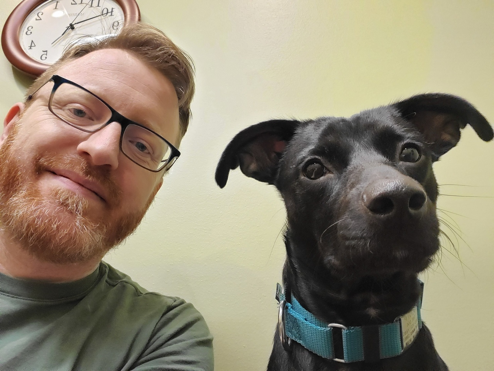

Știri urgente
11.12.2019 | Dobre Octavian
Laurenţiu Dabija: "Veți vedea lucrurile, de care nici nu v-ați gândit niciodată!"
Renumitul oftalmolog român Laurenţiu Dabija s-a retras la vârsta de 70 de ani, dar nu se simte deloc ca un pensionar, nici cu corpul, nici cu sufletul.
Laurenţiu Dabija afirmă că secretul longevității constă în îngrijirea adecvată a vaselor. Dacă vasele voastre de sânge sunt curate și sănătoase, veți putea trăi până la 110-120 de ani și vederea dvs. va fi la fel de bună ca și în tinerețe. Fostul oftalmolog și-a confirmat afirmațiile.
Corespondentul nostru a reușit să intervieveze oftalmologul în vârstă. Laurenţiu Dabija a explicat în detaliu metoda de curățare a vaselor de sânge oculare și de păstrare a vederii.
Oftalmologul român, omul de știință și laureatul Laurenţiu Dabija la locul său de muncă.
- Dl Laurenţiu, aţi spus în repetate că vasele ochilor curate sunt baza sănătății și a vederii bune. De ce credeţi asta?
E foarte simplu. Activitatea tuturor organelor interne și a întregului organism depinde de calitatea alimentării cu sânge. Alimentarea cu sânge - este furnizarea oxigenului și substanțelor nutritive, precum și absorbția dioxidului de carbon și a produselor metabolice în organele interne. În copilărie, tinerețe, suntem în mod constant în mișcare, iar vasele noastre sunt elastice, curate, astfel organele corpului nostru primesc nutriția necesară. Cu toate acestea, odată cu vârsta, începem să ne mișcăm din ce în ce mai puțin, vasele noastre devin din ce în ce mai murdare. În plus, odată cu dezvoltarea tehnologiilor înalte, apariția smartphone-urilor și a computerelor, ochii noștri nu au timp să se odihnească. Vă puteți imagina că nu veți folosi aceste dispozitive mai mult de câteva ore?
În lumea modernă, medicina a atins înălțimi extraordinare și nu va fi dificil pentru un chirurg să efectueze o intervenție chirurgicală la ochi. Cu toate acestea, nu toată lumea știe că fiecare 10 persoane după o intervenție chirurgicală oculară își pierde vederea COMPLET ŞI FĂRĂ POSIBILITATE DE RECUPERARE! Din înălțimea experienței mele, pot spune că cataracta și multe alte boli ale ochilor apar în principal din cauza descompunerii proteinelor din lentila ochiului și, dacă restabiliți proteinele lentilei, puteți restabili vederea de 100% la orice vârstă.
- La ce patologii duce poluarea vaselor oculare și descompunerea proteinelor din lentila ochiului?
Contaminarea vasculară provoacă boli precum:
- Hipermetropia - este o condiție în care dimensiunea ochiului este mai mică decât cea normală, ceea ce face ca imaginile să se concentreze în fața retinei, dar nu pe ea.
- Blefarita - este o patologia care afectează pleoapele și provoacă inflamație la marginile lor, este însoțită de iritații și roșeață a ochilor.
- Miopia - este un defect de vedere în care pacientul nu se poate concentra bine pe obiecte îndepărtate, dar vede clar la o distanță apropiată.
- Astigmatismul - este un defect al curburii corneene (o structură transparentă în formă de cupolă care acoperă irisul și elevul ochiului) sau sub formă de lentilă a ochiului.
- Retinopatia hipertensivă - această boală nu provoacă pierderea vederii, dar poate afecta dezvoltarea altor boli oculare care duc la pierderea acesteia.
- Cataracta - este opacifierea lentilei. Lentila - este structura din interiorul ochiului, care se află în spatele irisului și elevului, care la naștere este absolut transparentă.
În fiecare an, vârsta medie a persoanelor care suferă de probleme de vedere devine din ce în ce mai mică. Toată lumea știe că ochii au nevoie de odihnă și diverse vitamine pentru a menține funcționalitatea sănătoasă, dar din anumite motive nu avem o astfel de practică. Mulți oameni nu încearcă să trateze vederea la timp, ci doar așteaptă un moment în care situația se va deteriora până la punctul în care singura cale de ieșire va fi operația.
- Există oare simptome prin care se poate înțelege că există o defalcare a proteinelor lentilei ochiului?
Da, desigur. Principalele simptome sunt:
- Mâncărime pleoapelor
- Oboseala permanentă a ochilor
- Vedere încețoșată
- Iritarea ochilor
- Vedere neclară
- Dureri de cap
- Dureri de spate și gât
- Sindromul vederii de computer (CVS)
Cu toate acestea, chiar dacă nu aveți aceste simptome, curățarea vaselor trebuie făcută cel puțin la fiecare 5 ani după ce ați împlinit vârsta de 29-30 de ani. În caz contrar, acest lucru va fi mult mai dificil.
De fapt, vasele se murdăresc foarte repede, în special la persoanele în vârstă. Pentru a face acest lucru, nu este necesar să mâncaţi toată ziua burgeri sau cartofi prăjiți sau să folosiți smartphone pentru a vă obosi ochii. Este suficient să mâncaţi un cârnat sau ouă amestecate, astfel încât o anumită cantitate de colesterol să fie depusă pe vase. În timp, poluarea se acumulează.
- Puteți dezvălui secretul unei vederi bune?
Anterior, pentru a restabili cristalinul proteic al ochiului, a fost necesar să se comande ierburi speciale din diferite țări, să se facă tincturi speciale din ele. Acum nu mai este nevoie să faceți nimic, iar curățarea în sine durează doar 4 săptămâni! Acum, acest lucru nu mai este necesar, deoarece recent colegii mei de la Institutul de Cardiologie din Bucureşti au dezvoltat un remediu foarte bun și ieftin, conceput pentru a restabili proteina cristalinului ochiului. Se numeşte , substanțele sale sunt capabile să pătrundă în ochi și să sintetizeze proteinele pentru lentilă. De fapt, după aceea, ochiul devine ca în 20 de ani. Arată remediul astfel.
nu conține substanțe chimice. Formula
combină
un conținut ridicat de
zinc și vitaminele B1, B2, B6, B12.
Vitaminele de grupa B ajută la prevenirea celei mai frecvente cauze de orbire la
vârstnici - degenerescența maculară legată de vârstă. Combinația de vitamine poate scădea
nivelurile de homocisteină, a proteinei din organism, care poate fi legată de inflamație și
cu riscul crescut de a dezvolta degenerescență maculară.
Zincul – face parte din enzimele care reglează vederea în întuneric și ajută
la adaptarea rapidă la lumină puternică, reducând efectul blițului strălucitor.
Acest remediu a fost studiat chiar și la Academia de Ştiințifică română.
sintetizează foarte bine proteinele necesare în 3-4 săptămâni de admitere. Aș dori să vă arăt rezultatele studiului. În total, 300 de voluntari au participat la studiu.
Rezultatele sunt următoarele:
- Lentilele ochiului s-au recuperat - 96% din investigaţi.
- Îmbunătățirea clarității vederii - 98% din investigaţi.
- A dispărut opacitatea în ochi – 97% din investigații.
- Presiunea oculară a revenit la normal - 88% din investigații.
Cât costă și unde poate fi achiziționat?
La instituțiile medicale este livrat direct de la producător. Un coleg de-al meu a povestit cum au contactat un furnizor, care le-a livrat o soluție obișnuită de alcool etichetată ca , revoltător! Prin urmare, este mai bine să comandați pe site-ul producătorului. Cu atât mai mult, acum este valabilă promoția, o reducere de 50%, dacă lăsați o cerere pe site-ul oficial al vânzătorului promoţia a fost prelungită, acum ea acționează până la ()
Pentru a menține claritatea vederii recomand să luaţi un curs de curățenie 1 dată în 1-2 ani. Acest lucru este deosebit de important pentru persoanele în vârstă. În acest caz, veți putea să vă consolidați sănătatea și claritatea vederii.
- Laurenţiu, Vă mulțumesc foarte mult pentru interviul detaliat.
Comentarii:
Aurora Stârzu

Vă mulțumim că ați scris acest articol. Recent, de multe ori stau la computator, şi se înrăutăţeşte vederea. Am comandat .
Dragoş Popescu
Sunt de acord cu opinia doctorului. Produsul este pur și simplu excelent! Înainte de a începe să-l utilizez, vederea era minus 1 la un ochi și minus 2 la celălalt. Acum, vederea mea este aproape restaurată.
Horaţiu Cantemir

Am citit descrierea remedului pe site-ul oficial! Impresionant!
Roxana Silvia Tudoran
Produsul este foarte bun. Am avut o ciaţă în faţa ochilor timp de 10 ani. A apărut la 42. Cu ce doar n-am tratat-o, totul în zadar. După cursul , vederea s-a recuperat, este la fel ca în tinerețe! Cu toate acestea, ei știu cum să facă produse bune, dacă doresc.
Casian Bălan
Mulțumesc pentru informație. Am făcut o comandă. Doar au spus că mai mult de 3 pachete într-o singură mână nu dau.
Graţian Georgescu
Ingredientele sunt pur și simplu uimitoare!
Sabrina Popa
Am avut o problemă cu presiune ridicată în ochi. a ajutat cu adevărat. Nu am avut nevoie de operație. Medicul meu mi-a recomandat acest remediu. L-am comandat cu o reducere.
Carmelia Oteanu
Atâta timp cât este o astfel de reducere, trebuie să luăm. Căci apoi nici cu bani mari nu veți obţine produsul
Ileana Druţă
Mulțumesc pentru informație. Am făcut o comandă. Au spus că au mai rămas puține cutii, dar mai sunt.
Antoniu Marin Ursache
Mulțumesc. Am trimis cererea!